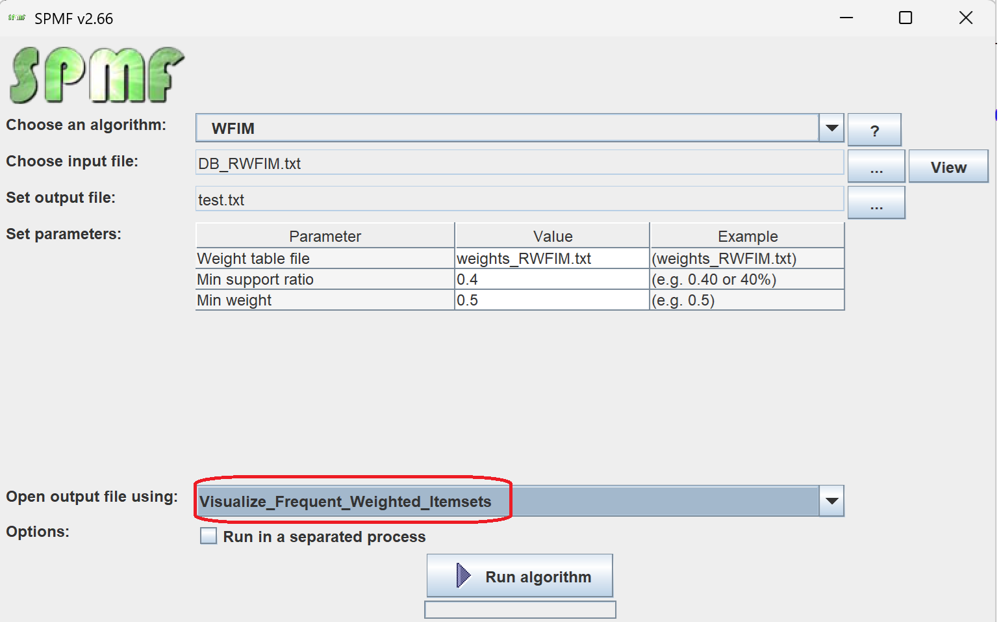
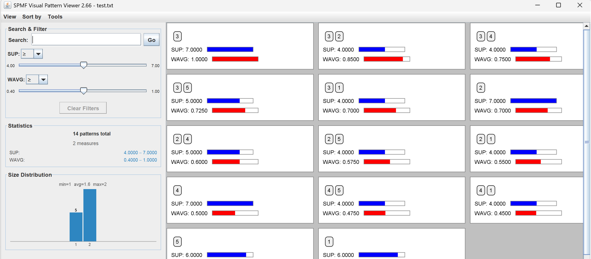

View frequent weighted itemsets with the Visual Pattern Viewer (SPMF documentation)
Frequent weighted itemsets are a type of patterns that can be produced by different algorithms offered in SPMF.
This page explains how to visualize the frequent weighted itemsets found by an algorithm using the Visual Pattern Viewer.
How to run this example?
If you want to run this example using the graphical user interface of SPMF, follow these steps.
1) First, select a frequent weighted itemset mining algorithm offered in SPMF. Several algorithms are offered such as NFWI, NFWCI, WIT-FWI, WIT-FWI-MOD, and WIT-FWI-DIFF, and are described in the documentation of SPMF.
2) Then, in the user interface of SPMF, after selecting an algorithm such as WFIM and setting its input file path, output file path, and parameters, click on the combo-box besides "Open output file using:", and select "Visualize_Frequent_Weighted_Itemsets" so that the discovered patterns will be opened with the visual pattern viewer.

3) Then click on "Run algorithm" to run the algorithm.
After the algorithm terminates, the discovered patterns will be displayed using the Visual Pattern Viewer:

The Visual Pattern Viewer interface is quite intuitive. It displays each pattern with its value for each evaluation measure using a colored bar.
The Visual Pattern Viewer offers several features such as:
- Viewing patterns using different layouts (grid, horizontal and vertical layout).
- Sorting patterns by size and measure values.
- Searching and filtering using measure values
- Displaying statistics about the number of patterns found.
Other ways of running the Visual Pattern Viewer
It is also possible to run the Visual Pattern Viewer as an algorithm from the GUI of SPMF.
In this case, in the user interface of SPMF, select "Visualize_Frequent_Weighted_Itemsets" as algorithm. Then, select a file containing frequent weighted itemsets as input file. Then, click "run algorithm".
This will display the patterns from the file using the Visual Pattern Viewer.
Besides, it is also possible to call the Visual Pattern Viewer from the command line interface of SPMF. To open a file called patternsFrequentWeightedItemsets.txt, this syntax can be used:
java -jar spmf.jar run Visualize_Frequent_Weighted_Itemsets patternsFrequentWeightedItemsets.txt in a folder containing spmf.jar and the input file.
What is the input file format?
The algorithm takes as input a file containing frequent weighted itemsets.
The file format is defined as follows. It is a text file, where each line represents a frequent weighted itemset.
Two formats are supported for frequent weighted itemset.
1) The format used by the WTI-FWI, NFWI and NFWCI algorithms: The first two lines are metadata indicating the type of patterns in this file and the source of the data. Then the following lines provide the list of patterns. On each line, the items of the itemset are first listed. Each item is represented by an integer and it is followed by a single space. After all the items, the keyword "#WSUP:" appears, which is followed by a real number indicating the weighted support of the itemset, expressed as a ratio between 0 and 1. For example, here is a sample output file containing 11 frequent weighted itemsets:
@FILETYPE="Frequent weighted itemsets"
@SOURCE="SPMF SOFTWARE https://philippe-fournier-viger.com/spmf/"
1 #WSUP: 0.5783
1 3 #WSUP: 0.4106
5 #WSUP: 0.6044
2 5 #WSUP: 0.4012
3 5 #WSUP: 0.5222
4 #WSUP: 0.6739
2 4 #WSUP: 0.4681
3 4 #WSUP: 0.4099
2 #WSUP: 0.6953
2 3 #WSUP: 0.4313
3 #WSUP: 0.7360
The first line indicates that the itemset containing item 1 has a weighted support of 0.5783.
The second line indicates that the itemset containing items 1 and 3 has a weighted support of 0.4106.
Other lines follow the same format.
1) The format used by the WFIM algorithm: The pattern file is a text file where each line represents one
weighted frequent itemset. The first two lines are metadata indicating the type of patterns in this file and the source of the data. Then the following lines provide the list of patterns. On each line, the items of the itemset
are first listed as positive integers separated by single spaces. After all the
items, the keyword "#SUP:" appears, followed by the
support count of the itemset. Then the keyword "#WAVG:" appears, followed by the average weight of the items in the itemset (a real number
formatted to 4 decimal places).
For example, the output file for this example is:
@FILETYPE="Frequent weighted itemsets"
@SOURCE="SPMF SOFTWARE https://philippe-fournier-viger.com/spmf/"
3 #SUP: 7 #WAVG: 1.0000
3 2 #SUP: 4 #WAVG: 0.8500
3 4 #SUP: 4 #WAVG: 0.7500
3 5 #SUP: 5 #WAVG: 0.7250
3 1 #SUP: 4 #WAVG: 0.7000
2 #SUP: 7 #WAVG: 0.7000
2 4 #SUP: 5 #WAVG: 0.6000
2 5 #SUP: 4 #WAVG: 0.5750
2 1 #SUP: 4 #WAVG: 0.5500
4 #SUP: 7 #WAVG: 0.5000
4 5 #SUP: 4 #WAVG: 0.4750
4 1 #SUP: 4 #WAVG: 0.4500
5 #SUP: 6 #WAVG: 0.4500
1 #SUP: 6 #WAVG: 0.4000
For example, the first line indicates that the itemset {3} has a support count of 7
(appears in 7 out of 10 transactions) and an average weight of 1.0000. The weighted
support can be computed as wsup({3}) = 1.0000 × 7 = 7.0000. The following lines
follow the same format.